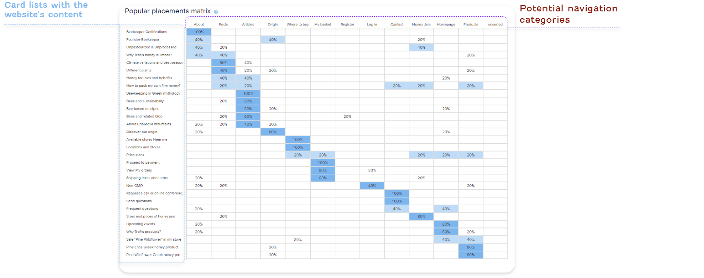
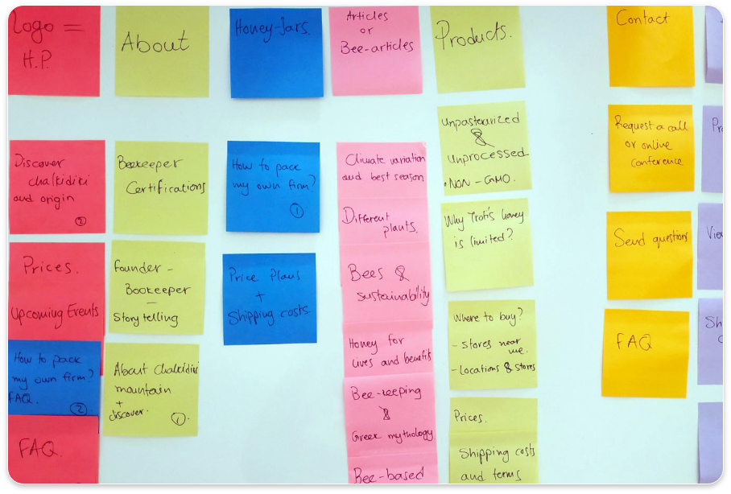
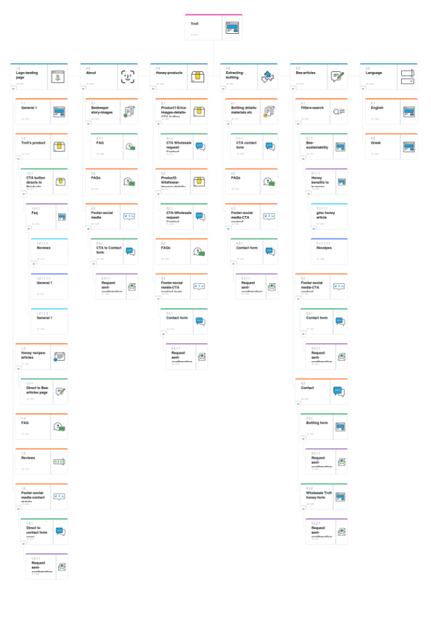
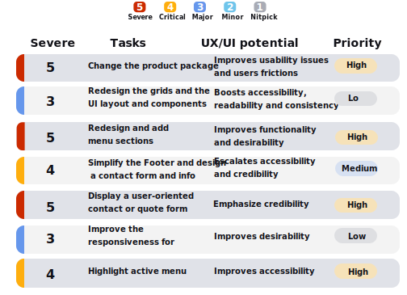
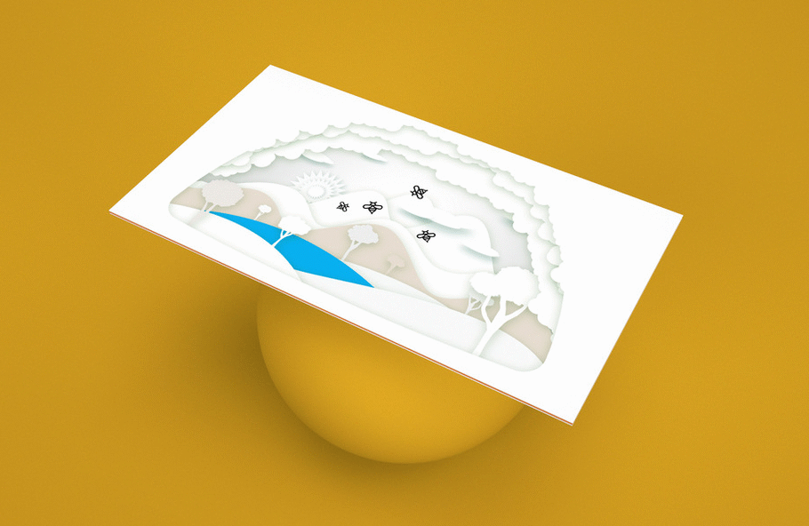

Information Architecture / Trofi project
- Having the know-how and the experience of producing natural honey for more than 10 years, Trofi decided to create a modern bottling facility in north Greece. This gives to Trofi the opportunity to control every step of the procedure, to create new products in their high standards and to bottling other beekeepers products into jars.
- These days many beekeepers secretly are adding synthetic chemicals to its product to boost the value and increase the company's profits so extensive quality control is required.
- My role for this project is to redesign the existing website and find a way to structruly show the two basic services that Trofi offers; Honey for wholesale and Bottling Honey in jars.
Challenges
Trofi needed a new platform for both Wholesalers who could come in contact and make a bidding for large quantities of honey and for Beekeepers locally who wanted to bottle their honey firm as well as to get certified with ISO. The most challenging part was that in the wholesale market, especially when it applies to different countries within Europe, the prices are range widely so it is hard to show it digitally.
Solutions
A simple and intuitive landing page that enable Trofi's "Personas" to select which service satisfies their needs and fill in a contact form, get information of how to bottling-extracting their honey firm, how they can certify with food ISO their product, chat with the specialist of the field, and customize with filters their requests.
Strategy
I started out by navigating through the existing web platform to understand better the functionalities and have followed these steps:
- Reasearch digitally to identify market threats
- Execute a task analysis
- Conduct a card sort to improve the sitemap structure
- Transform the insights to visual improvements
- I have used screenshots, inspiration, research for best UX practices and principles.
- Commission a tailored artwork that matches with your taste
Card Sort Technique - Online Session
Starting with the most important feature "the Header", I have conducted an online card-sort session with participants of our target audience in order to optimize the menu navigation and labeling. This is a great methodology, that helps the designers to analyze the IA (Information Architecture) of the site and overperform how participants sort content into categories that make sense to them.
The following table content shows the percentage of our participants who have grouped each card into the corresponding category. After analyzing the inputs we can optimize some Menu navigation pages and improve to a more relevant Labelling.
Card Sort Technique -Analyze insights
The current navigation Menu consists of the pages as About, Products, Facts, Origins, Where to buy, Contact. For the purpose of this website we are missing core features like Quatation Forms (the place where users can require for a quote or collaboration) and the "Extracting-Bottling" or "Honey-Jars"(for those consumers who want to standardize their honey firm into bottles/jars.
Based on our user's feedback, the categories like Origin, Fact, Where to buy, gathered less traffic so the new roposal navigation menu will consist of the Logo (Home), About, Honey-Jars, or Bottling, Bee-articles, Contact, Consultancy
Sitemap
The sitemap works like a skeleton plan of how the website's content (all the pages, photos, files, videos) is hierarchically designed and also represents the relationship between all of them.
Task Analysis - Desktop resolution
The task analysis is a great methodology to identify crucial pain points of the user flows and usability issues from the current version of the website and translate it to improvements.
Prioritize the improvements
Summarize the steps until now:
- Research on other similar websites locally and globally
- Understand which are the user needs and trends
- Navigate and breakdown both the menu sections and the content of the current website
- Conduct a card-sort session to identify the best section labeling for the navigation menu
- Uncover user needs and analyze the results
- Redesign the sitemap with all the core features
- Represent a task analysis to identify crucial pain points for improvements
A "5-point" ranking system to rate the level of usability
Now is important that all the comments and the list of improvements to be analyzed to understand the relation between the point of complexity and highest-lower priority. This step will allow us to compare among different changes to accelerate users usability , accessibility, credibility and desirability.

IXD-Interaction Design
IXD is the design of the interaction between users and products. The scope of interaction design is to create products that enable the user to accomplish their objective(s) in the best way possible at the right time.
These illustrations show the most important features of Trofi's services and they will be used for the Onboarding page. Features as Honey products, Greek mountains, Quality control, and Bottling-Extracting honey.